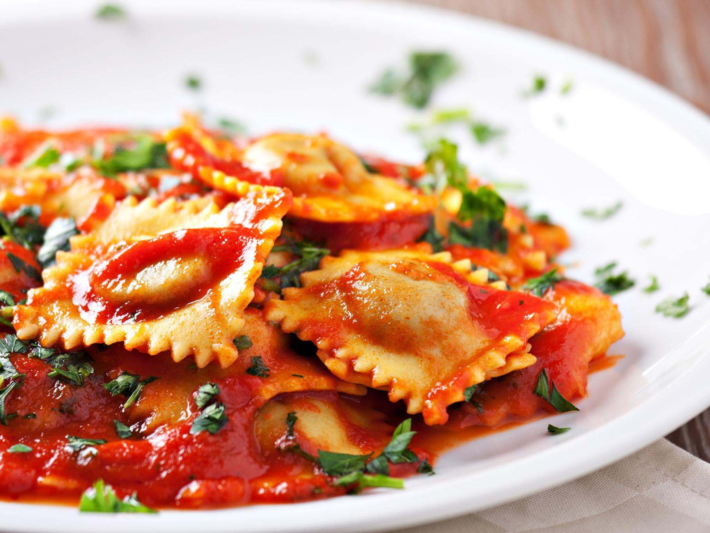
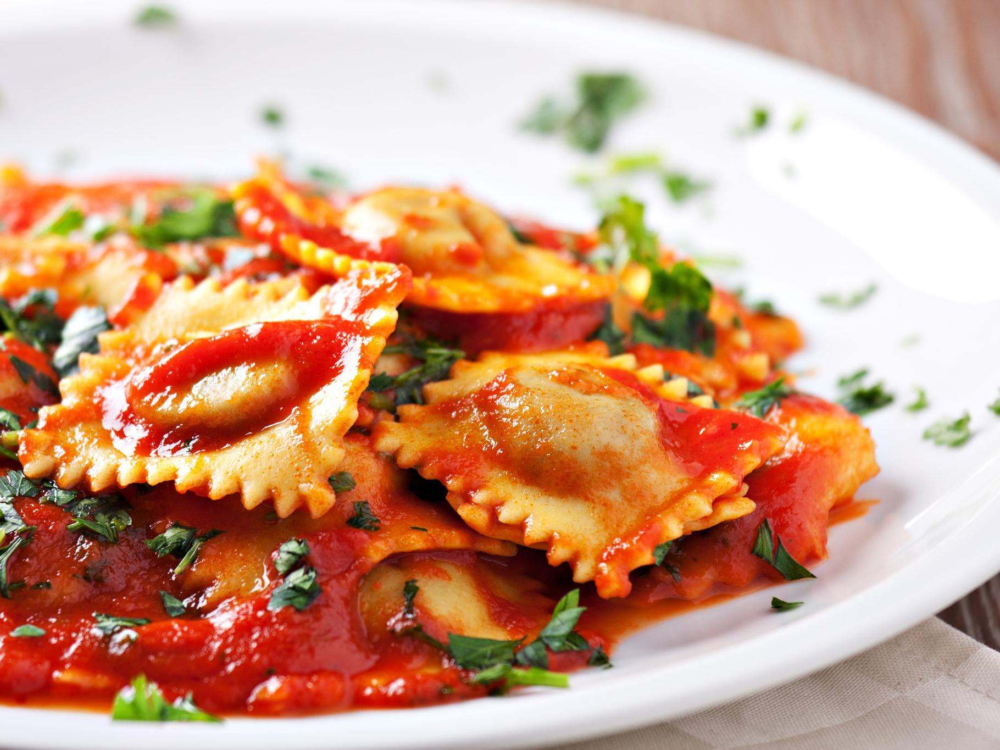

Arquitetura e Arte
O período do Renascimento iniciou-se na Itália no século XIV e perdurou até ao século XVI.
Feitos literários, tais como a poesia de Petrarca, Tasso e Ariosto; assim como a prosa de Boccaccio,
Maquiavel e Castiglione exerceram uma enorme e duradoura influência no desenvolvimento subsequente da cultura Ocidental;
iguais repercussões tiveram a pintura, escultura e a arquitectura produzida por gigantes como
Leonardo da Vinci, Raffaello, Botticelli, Michelangelo, Brunelleschi, Bramante, Masaccio, Giorgio Vasari, Tintoretto, Paolo Veronese e Fra Angelico.
Culinária
A culinária italiana evoluiu através dos séculos, ao longo das mais variadas alterações sociais e políticas;
suas raízes podem ser traçadas até o século IV a.C. Mudanças significantes ocorreram com a descoberta do Novo Mundo,
que ajudaram a moldar muito do que é conhecido como a culinária italiana hoje em dia,
através da introdução de ingredientes como batatas, tomates, pimentões e milho, todos eles parte central da cozinha daquele país,
e que no entanto só foram introduzidos em grande escala a partir do século XVIII.
Arquitetura e Arte
O Renascimento Italiano na Arquitetura
O período de Renascimento aconteceu na Europa entre meados do século XIV e o fim do século XVI.
Ele representou diversas mudanças no mundo, como a transição do feudalismo para o capitalismo, e impactou diversas áreas como as artes, a filosofia, a ciência e, claro, a arquitetura.
Diferente da arquitetura medieval, onde as obras eram construídas principalmente para proteção contra os inimigos, durante o renascimento os arquitetos começaram a sua profissionalização de fato.
Eles passaram a assumir um estilo pessoal, inspirado principalmente na arquitetura clássica.
O renascimento italiano deu o pontapé inicial para que o movimento se espalhasse pelo mundo.
A cúpula da catedral Santa Maria Del Fiore, projetada pelo arquiteto e escultor Filippo Brunelleschi, é considerada o primeiro projeto da arquitetura renascentista.
Isso porque ele teve o desafio de solucionar um problema referente a um vão que impedia a construção da cúpula.
O fato de ter observado a situação (uma obra que já existia há séculos) e interferido naquela realidade buscando a solução marcou a história da arquitetura.
A cúpula da catedral Santa Maria Del Fiore é a primeira com estrutura octogonal no mundo.

Outra obra famosa do renascentismo italiano é a Catedral de São Pedro, projetada pelo arquiteto Donato Bramante.
Ela mistura elementos renascentistas e também barrocos, marcando a transição de um estilo para o outro no país.
Trata-se do maior e mais importante edifício religioso do catolicismo e um dos locais cristão mais visitados do mundo.
A Genialidade da Arte italiana
Se houve um momento da história que revelou personalidades criativas e geniais, ele foi o renascimento, uma vez que trouxe à tona talentos que estão no imaginário até dos mais desconectados com a arte.
Esses foram alguns dos grandes artistas renascentistas. Isso sem falar, é claro, nos grandes nomes da pintura e da escultura.
LEONARDO DA VINCI (1452-1519)
Leonardo da Vinci foi uma figura tão famosa e importante que, praticamente, dispensa apresentações. Afinal, além de ser considerado um dos maiores pintores de todos os tempos,
ele também foi um mestre da aviação, anatomia, arquitetura, poesia, escultura, engenharia e música. Para muitos estudiosos, o seu talento e genialidade são considerados sobre-humanos.
O criador de Mona Lisa atingiu o ponto máximo da perfeição em suas pinturas ao aperfeiçoar a técnica do sombreamento e, assim, executou um trabalho impressionante, em que a harmonia, o realismo e a beleza foram valorizados até o último grau.
Porém, muito se engana quem pensa que suas obras contaram apenas com a genialidade do artista para serem desenvolvidas. Isso porque Leonardo da Vinci testou muitas técnicas e, assim, cometeu diversos erros antes de ser dono de um repertório único.

MICHELANGELO BUONARROTI (1475-1564)
Michelangelo é outro nome que não poderia deixar de aparecer nesta lista de grandes artistas renascentistas, uma vez que criou pinturas e esculturas que o eternizaram.
Apesar de ter sido um talentoso pintor, basta pensarmos que ele foi escolhido para pintar o teto da Capela Sistina, a sua grande paixão foi a escultura.
O realismo de suas peças foi tão notório que, ao criar uma escultura que representava Moisés, Michelangelo teria ficado tão impressionado com a sua perfeição que, extasiado, teria batido um martelo nela e gritado: “Fala, fala!”.

Culinária
As comidas típicas da Itália conquistaram o coração (e paladar) dos brasileiros e do mundo. É muito difícil encontrar alguém que não goste de pelo menos um prato italiano, como o macarrão.
Mas nem só de massa vive a culinária italiana, ela se estende, ainda, a muitos outros pratos e sobremesas deliciosas. Confira algumas das principais comidas típicas da Itália.
PIZZA E RAVIOLI
A famosa (e deliciosa) pizza foi inventada no sul da Itália em 1889, tornando-se popular no resto do país no final do século XX.
É uma das comidas típicas da Itália mais apreciadas no mundo, cada país tem a sua própria versão de pizza, com diferentes ingredientes.
A primeira pizza Margherita da Itália foi criada em Nápoles, feita por Taffaello Esposito, que fez a pizza em homenagem à Rainha Margherita que estava visitando a região.
Os melhores lugares para provar uma pizza legítima italiana é nas pizzarias tradicionais.
O Ravioli é uma das comidas típicas da Itália que temos o costume de comer no Brasil. São mini pastéis recheados com diversos ingredientes.
São cozidos e a massa é feita de ovo e farinha de trigo.
Esse prato foi criado na Sicília, no sul da Itália, no século XII. Inicialmente o ravioli não era recheado, mas depois foi ganhando outras formas e recheios, como ervas, queijos e carnes.
 

LASAGNA E RISOTO
Mais um prato adorado pelos brasileiros. A Lasagna é uma das comidas típicas da Itália mais antigas.
Alguns livros dizem que a origem do prato pode ser grega ou inglesa, mas certamente foi a Itália que aprimorou a receita.
A lasagna tradicional é feita com molho de carne moída (ragú), porém existem diversas outras versões deliciosas. Para comer uma boa lasagna na Itália, procure os restaurantes
O risoto é uma das comidas típicas italianas com mais variação de ingredientes. Ele surgiu no norte da Itália, no século XI, e é feito com um arroz especial, que dá um aspecto mais cremoso ao prato.
O mais famoso é o risotto milanês, que surgiu em 1574 em Milão, através de uma “pegadinha” feita de um estudante com o seu professor.
O estudante subornou o cozinheiro (responsável pelo banquete do casamento da filha do professor) para que ele colocasse açafrão no risotto.
BUCATINI ALL’AMATRICIANA E ARANCINO
Prato típico de Amatrice, cidade da região central da Itália, é super tradicional. O bucatini é um tipo de massa longa com um buraco no meio, que parece um spaghetti grosso.
O molho é a base de tomates, guanciale (tipo um bacon feito com a bochecha do porco) e queijo pecorino.
É o bolinho de arroz italiano. Prato típico da Sicília, é um bolinho de risotto, recheado normalmente com molho vermelho de carne e queijo, empanado com uma massa de farinha e água (pastella) e frito.
É delicioso e pode ser recheado de presunto e queijo, entre outros sabores. Tem esse nome por causa do formato que lembra uma laranjinha (arancia em italiano é laranja).